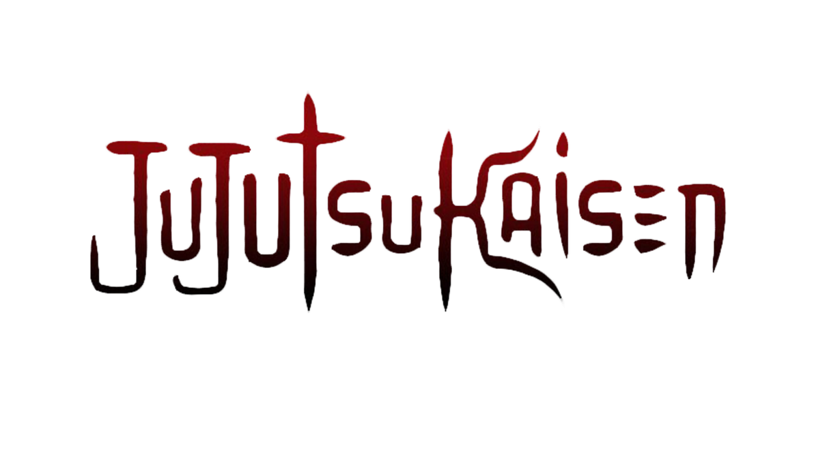

Jujutsu Kaisen
Synopsis: Yuji Itadori joins a secret organization of Jujutsu Sorcerers after becoming the host of the powerful Curse, Ryomen Sukuna, and battles deadly curses threatening humanity.
Total Episodes: 59
Episode Duration: 24 mins
Total Seasons: 3
Genre(s): Action, Supernatural, Dark Fantasy, School, Shounen
Type: TV
Studio(s): MAPPA
Release Year: 2020
Start Date: October 3, 2020
End Date: Still Airing
Airing Status: Airing
Broadcast Schedule: Thursdays (JST)
Age Rating: R - 17+
IMDb Rating: 8.5/10
Available On: Crunchyroll, Netflix
Related Works: Jujutsu Kaisen 0, Season 2: Hidden Inventory / Shibuya Incident, Season 3: Culling Game